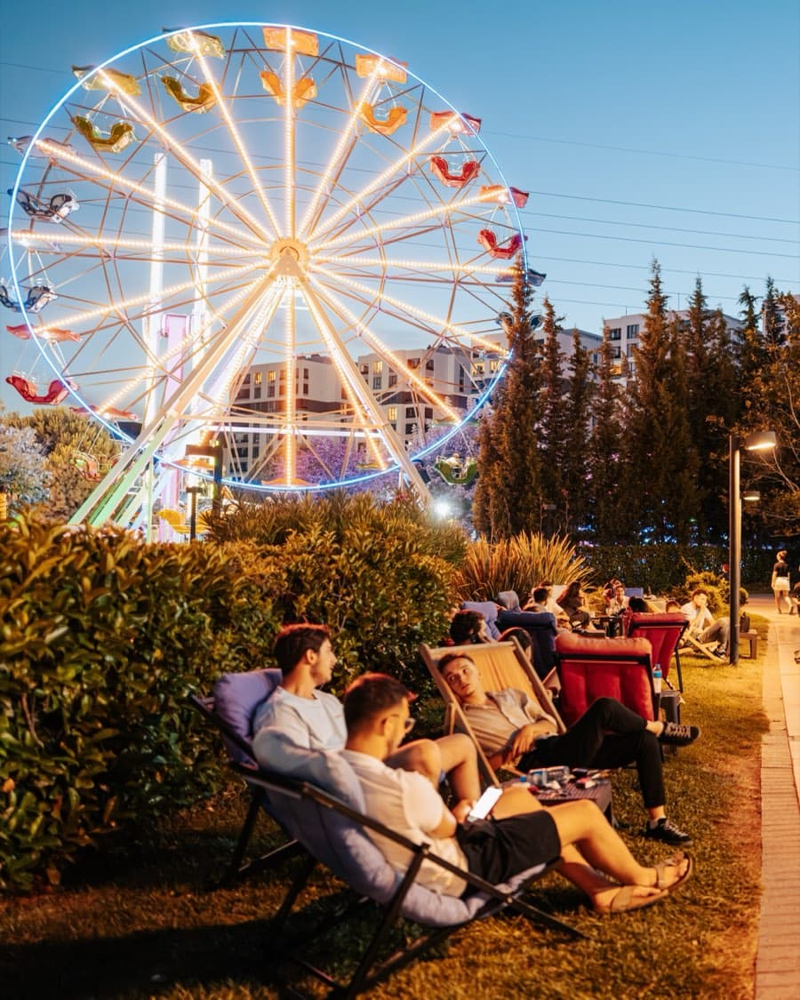

Kahveyi bekleme,
onunla vakit geçir
Masaya oturduğun andan kalktığın ana kadar her detay planlı: QR menü, kasada telefon numarasıyla eklenen yıldız, beklerken oynanan salon oyunları.
Podyumpark AVM · Nilüfer, Bursa
Espresso, soğuk demleme ve el yapımı waffle. Kahven gelene kadar oyna, her yedi içecekte biri bizden.
Masaya oturduğun andan kalktığın ana kadar her detay planlı: QR menü, kasada telefon numarasıyla eklenen yıldız, beklerken oynanan salon oyunları.
Cactus'te neler var
Kasiyere telefon numaranı söyle, yıldızın otomatik eklenir. 7 yıldız dolduğunda içeceğin bizden.

Podyumpark menüsünün tamamı — fiyatlar güncel, fotoğraflı.
Podyumpark AVM, Nilüfer / Bursa
Mekân



Görüşmek üzere
Podyumpark AVM, Nilüfer / Bursa. Hafta içi 16:00'dan, hafta sonu 14:00'ten itibaren açığız.